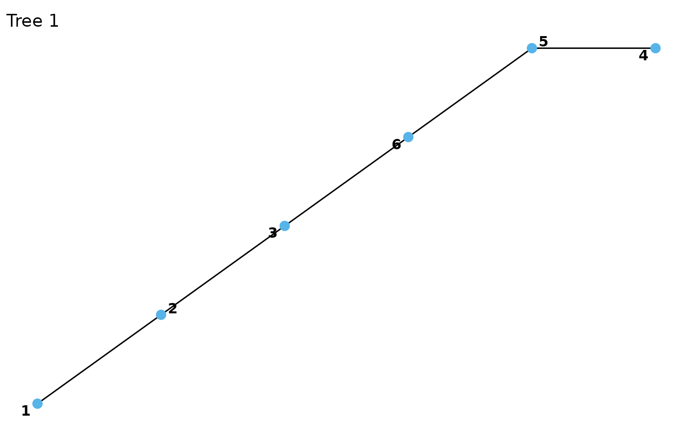
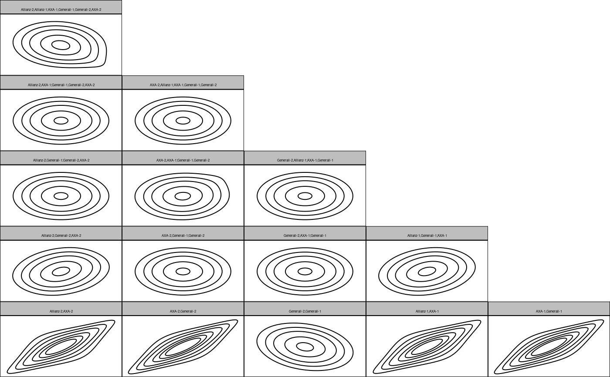

Automated fitting or creation of custom S-vine copula models
svinecop( data, p, var_types = rep("c", NCOL(data)), family_set = "all", cs_structure = NA, out_vertices = NA, in_vertices = NA, type = "S", par_method = "mle", nonpar_method = "constant", mult = 1, selcrit = "aic", weights = numeric(), psi0 = 0.9, presel = TRUE, trunc_lvl = Inf, tree_crit = "tau", threshold = 0, keep_data = FALSE, show_trace = FALSE, cores = 1 )
| data | a matrix or data.frame (copula data should have approximately uniform margins). |
|---|---|
| p | the Markov order. |
| var_types | variable types; discrete variables not (yet) allowed. |
| family_set | a character vector of families; see |
| cs_structure | the cross-sectional vine structure (see
|
| out_vertices | the out-vertex; if |
| in_vertices | the in-vertex; if |
| type | type of stationary vine; |
| par_method | the estimation method for parametric models, either |
| nonpar_method | the estimation method for nonparametric models, either
|
| mult | multiplier for the smoothing parameters of nonparametric families. Values larger than 1 make the estimate more smooth, values less than 1 less smooth. |
| selcrit | criterion for family selection, either |
| weights | optional vector of weights for each observation. |
| psi0 | prior probability of a non-independence copula (only used for
|
| presel | whether the family set should be thinned out according to symmetry characteristics of the data. |
| trunc_lvl | currently unsupported. |
| tree_crit | the criterion for tree selection, one of |
| threshold | for thresholded vine copulas; |
| keep_data | whether the data should be stored (necessary for using
|
| show_trace | logical; whether a trace of the fitting progress should be printed. |
| cores | number of cores to use; if more than 1, estimation of pair copulas within a tree is done in parallel. |
# load data set data(returns) # convert to pseudo observations with empirical cdf for marginal distributions u <- pseudo_obs(returns[1:100, 1:3]) # fit parametric S-vine copula model with Markov order 1 fit <- svinecop(u, p = 1, family_set = "parametric") fit#> 3-dimensional S-vine copula model of order p = 1 ('svinecop_dist')summary(fit)#> # A data.frame: 15 x 11 #> tree edge conditioned conditioning var_types family rotation parameters df #> 1 1 4, 5 c,c t 0 0.72, 2.97 2 #> 1 2 5, 6 c,c t 0 0.77, 3.22 2 #> 1 3 6, 3 c,c gaussian 0 -0.24 1 #> 1 4 1, 2 c,c t 0 0.72, 2.97 2 #> 1 5 2, 3 c,c t 0 0.77, 3.22 2 #> 2 1 4, 6 5 c,c frank 0 1.2 1 #> 2 2 5, 3 6 c,c indep 0 0 #> 2 3 6, 2 3 c,c indep 0 0 #> 2 4 1, 3 2 c,c frank 0 1.2 1 #> 3 1 4, 3 6, 5 c,c indep 0 0 #> tau loglik #> 0.511 NaN #> 0.561 NaN #> -0.152 NaN #> 0.511 NaN #> 0.561 NaN #> 0.047 NaN #> 0.000 NaN #> 0.000 NaN #> 0.047 NaN #> 0.000 NaN #> # ... with 5 more rowsplot(fit)contour(fit)logLik(fit)#> [1] 87.19237 #> attr(,"df") #> [1] 8